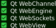

WebAppCreator
Ce système a été consu pour créer des ApplicationWebs (Store, jeux, sites éducatifs...)
qui s'ouvrent dans une fenetre sans navigateur Web.
Tout cela aura besoin de Qt
& de Linux(pas encore disponible pour Windows & MacOS)
Il nécéssite les composants QWebEngine(voir image ci-dessous)
Qui sont accessibles dans l'outils de mantenance dans "Qt>Qt.[version]>Additionnal Librairies>QWebEngine"

Un guide vous sera fourni après la création du code.